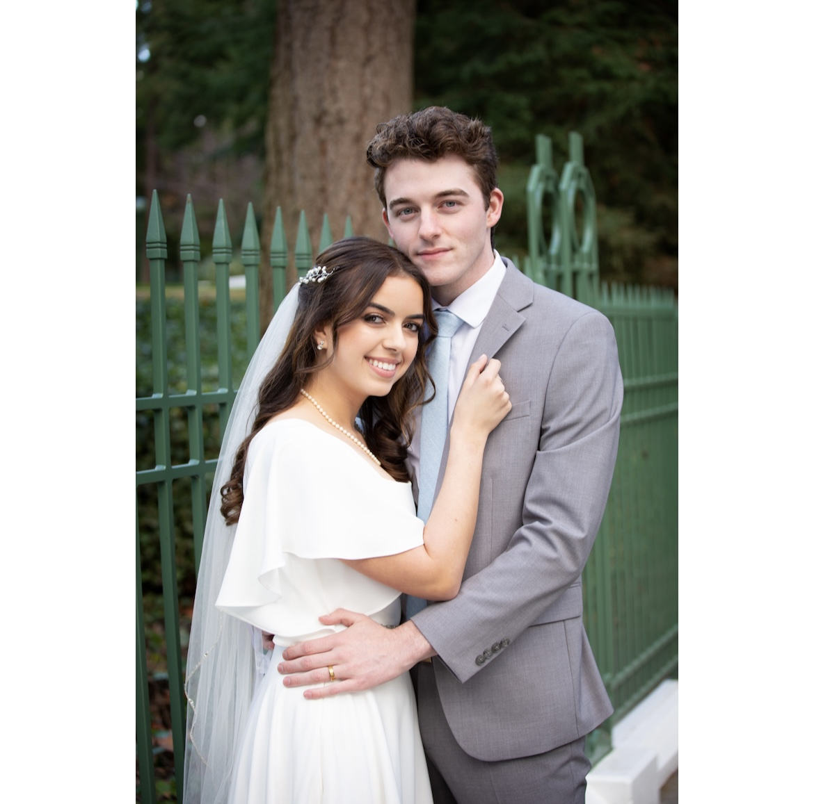

I was born and raised in the beautiful state of Oregon in the suburbs of Portland. I have three sisters and two cats. My wonderful husband and I met in high school, and after serving missions, we moved out to Provo for school. I served in the Hawaii Honolulu Mission and the Oklahoma Oklahoma City Mission for 18 months, and I enjoy visiting both of those places when I can. My hobbies including hiking, playing the piano, baking, and dreaming of the day when my husband and I adopt a dog.
I am currently studying accounting at Brigham Young University, and I love it! I also work at a small jewelry store called FORGE Jewelry Works.
